Loading ...
|
4-2-3-1
|
France | 3 | - | 0 | Sweden |
4-4-2
|
| HT 1-0 | ||||||
|
FIFA World CupTuesday 30 June 2026
|
||||||
- Venue
- New York New Jersey Stadium
- Attendance
- 80,663
- Referee
- Danny Desmond Makkelie
Goal45'
K. Mbappé
Assist: O. Dembélé
Goal53'
B. Barcola
Assist: M. Olise
Goal74'
K. Mbappé
Assist: M. Olise
- 2
Substitution75'
O. Dembélé
D. Doué
J. Koundé
M. Gusto
Substitution78'
L. Digne
T. Hernández
- 2
Substitution85'
K. Mbappé
J. Mateta
M. Olise
R. Cherki
Whistle45+4'
45+4'
- 2
Substitution66'
E. Stroud
T. Ali
L. Bergvall
B. Zeneli
- 2
Substitution82'
D. Svensson
M. Svanberg
Y. Ayari
B. Nygren
Substitution89'
A. Isak
G. Nilsson
France | |
|---|---|
Goalkeeper | |
| 16 | M. Maignan |
Defender | |
| 3 | L. Digne 78' |
| 4 | D. Upamecano |
| 5 | J. Koundé 75' |
| 17 | W. Saliba |
Midfielder | |
| 7 | O. Dembélé 75' |
| 8 | A. Tchouaméni |
| 11 | M. Olise 85' |
| 12 | B. Barcola 53' |
| 14 | A. Rabiot |
Forward | |
| 10 | K. Mbappé 45'74'85' |
Substitutes | |
| 2 | M. Gusto 75' |
| 19 | T. Hernández 78' |
| 20 | D. Doué 75' |
| 22 | J. Mateta 85' |
| 24 | R. Cherki 85' |
Sweden | |
Goalkeeper | |
| 1 | J. Widell Zetterström |
Defender | |
| 2 | G. Lagerbielke |
| 3 | V. Lindelöf |
| 5 | G. Gudmundsson |
| 8 | D. Svensson 82' |
Midfielder | |
| 7 | L. Bergvall 66' |
| 11 | A. Elanga |
| 18 | Y. Ayari 82' |
| 24 | E. Stroud 66' |
Forward | |
| 9 | A. Isak 89' |
| 17 | V. Gyökeres |
Substitutes | |
| 10 | B. Nygren 82' |
| 19 | M. Svanberg 82' |
| 22 | B. Zeneli 66' |
| 25 | G. Nilsson 89' |
| 26 | T. Ali 66' |


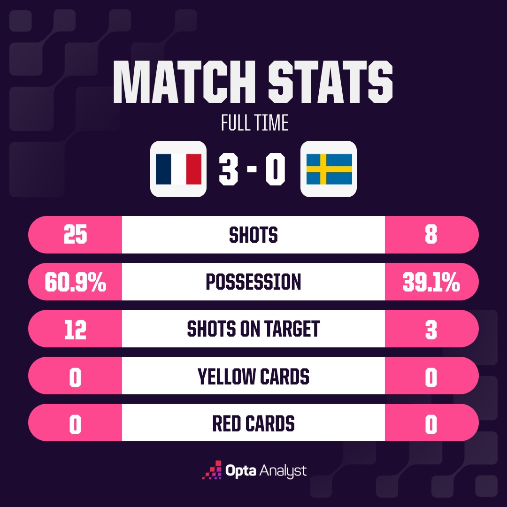
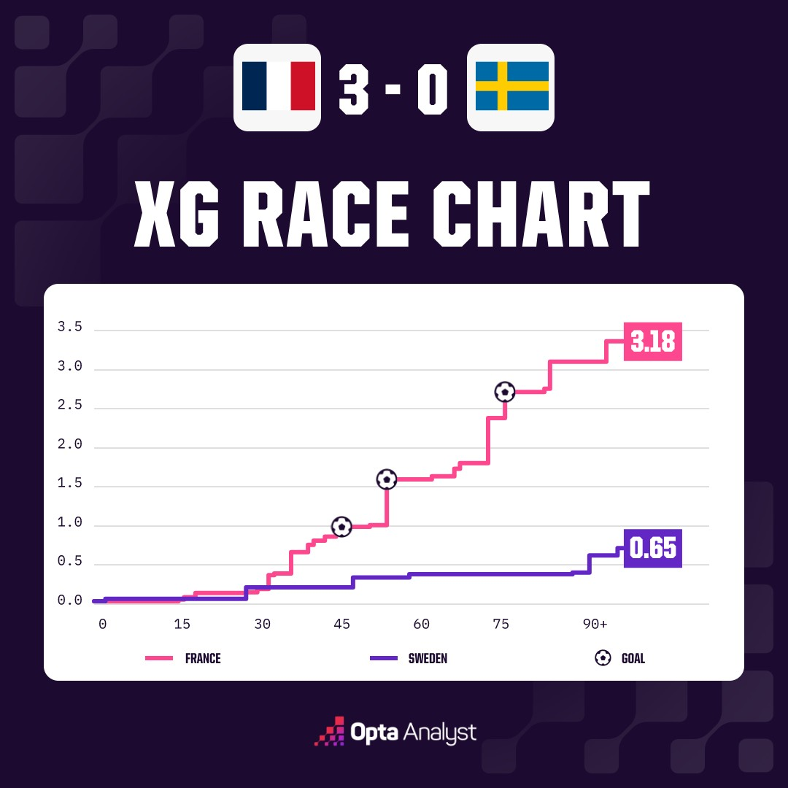
95'
France have won their last 4 games in the FIFA World Cup, their last longer winning streak was from 30th June 2018 to 26th November 2022, a run of 6 games.
95'
Sweden have failed to win in their last 3 games in the FIFA World Cup, their last joint longest winless streak was from 12th June 2002 to 10th June 2006.
95'
Sweden attempted 8 shots in this game, their lowest total in a single match in the 2026 FIFA World Cup.
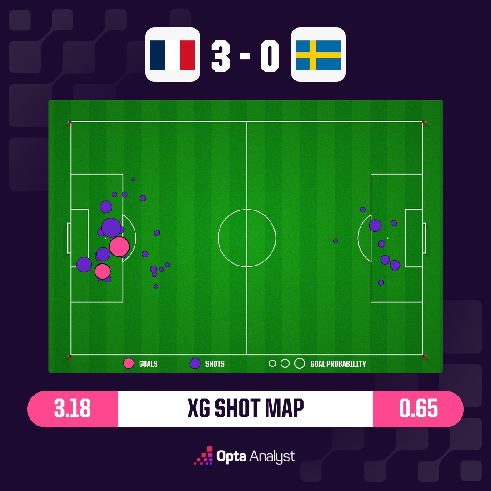
90+4'
That's it! The referee blows the whistle and we have reached full-time. The final score at New York New Jersey Stadium is France 3-0 Sweden.
90+4'
CLOSE! Mattias Svanberg gets into a decent shooting position inside the France area, and manages to find space to get an effort off. However, Mike Maignan is equal to it.
90+4'
It’s backs to the wall now — France throwing everything into defending their advantage, with a flurry of crucial interventions.
90+4'
Shot blocked! Gustaf Nilsson unleashes an attempt at goal, but the ball does not reach its target thanks to Dayot Upamecano, who makes a solid block to stem the danger – for now.
90+3'
Free-kick! A foul from Rayan Cherki on Taha Ali. It is well away from France’s goal, so it is unlikely to result in a chance for Sweden.
90+2'
What a miss! That is a bad finish from Jean Mateta, who has been unable to convert from a good opportunity, seeing a big chance for France to extend their lead go begging. Will Sweden make them pay for that profligacy?
90+1'
Free-kick! A foul from Malo Gusto on Taha Ali. It is well away from France’s goal, so it is unlikely to result in a chance for Sweden.
90+1'
Jean Mateta goes in on Gustaf Lagerbielke and concedes a foul. The free-kick is not in a particularly dangerous area from France’s viewpoint, though.
89'
The Sweden manager is looking to the substitutes’ bench, bringing on Gustaf Nilsson in place of Alexander Isak. Will the change make a difference? Let’s find out!
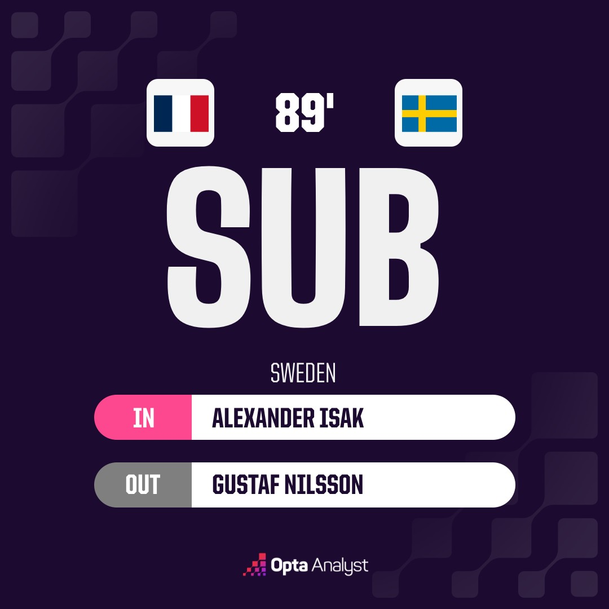
89'
It does not look like this is going to be Sweden’s day! They are already well behind in this match and have now squandered a huge opportunity to get back into the contest, with Viktor Gyökeres unable to find the net from a promising goalscoring position.
88'
It’s backs to the wall now — France throwing everything into defending their advantage, with a flurry of crucial interventions.
87'
That’s offside! A switched-on defensive line from Sweden, as they step up at the right time to catch Bradley Barcola offside, and the assistant referee’s flag is up.
86'
A chance goes begging as Mattias Svanberg gets off a shot that does not hit the target. They might have done better with that one, but instead it is a goal-kick to France.
85'
Free-kick! A foul from Adrien Rabiot on Mattias Svanberg. It is well away from France’s goal, so it is unlikely to result in a chance for Sweden.
85'
Michael Olise’s match is over as France decide to make a substitution. Rayan Cherki enters the field in what looks like a tactical change.
85'
Substitution! Jean Mateta replaces Kylian Mbappé for France as the manager shuffles the pack. Can Jean Mateta make an impression as this match continues?
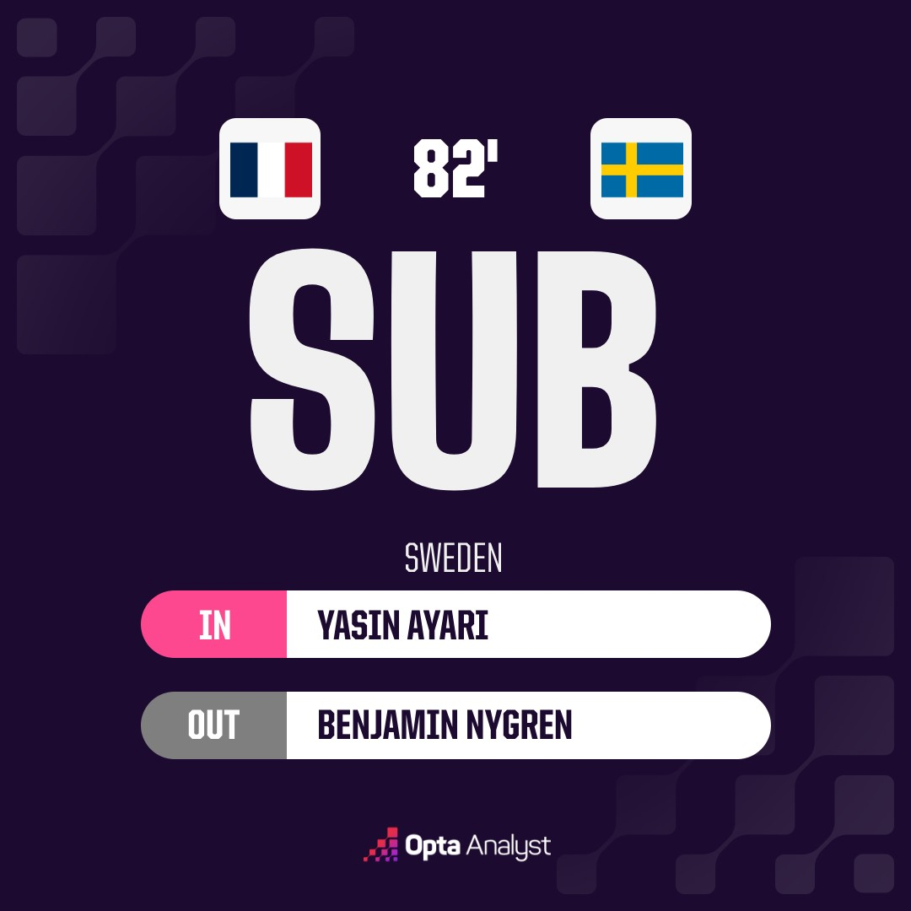
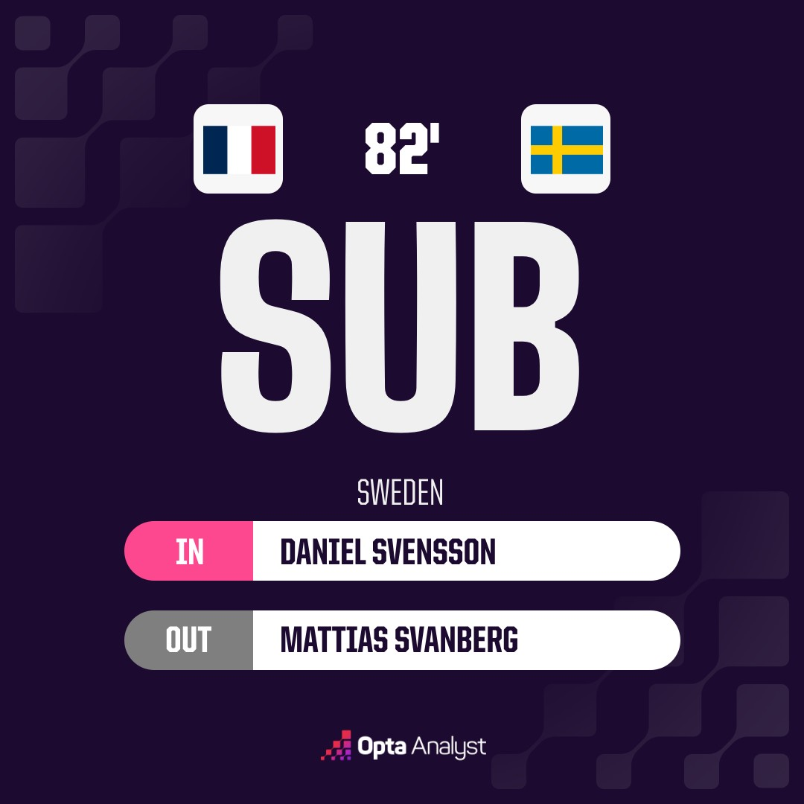
82'
Yasin Ayari’s match is over as Sweden decide to make a substitution. Benjamin Nygren enters the field in what looks like a tactical change.
82'
The Sweden manager is looking to the substitutes’ bench, bringing on Mattias Svanberg in place of Daniel Svensson. Will the change make a difference? Let’s find out!
82'
An opportunity for France to extend their lead goes begging, as Bradley Barcola is unable to convert from a good opening. Will they live to regret that miss?
81'
France have attempted the last 6 shots in this game, Sweden last shot was taken by Lucas Bergvall in the 57th minute.
81'
SHOT! Désiré Doué manages to get a shot off from inside the area, but although it was heading in, they cannot get enough on it to beat Jacob Widell Zetterström, who makes the save.
79'
A rash challenge from Gabriel Gudmundsson, who sends Désiré Doué tumbling, giving France a free-kick. It is not in a threatening position, but it gives them a chance to get back on the ball.
78'
France are making a tactical change. Lucas Digne is leaving the field and in their place comes Théo Hernández – we will soon see if this switch has the desired impact.
78'
A free-kick to France, as Besfort Zeneli goes in and fouls Aurélien Tchouaméni. However, Sweden will not mind giving one away in this area too much, with plenty of distance to their goal.
76'
France have had more of the ball with 75 minutes played, with 63.59% possession compared to Sweden’s 36.41%. That is not likely to change too much in the final 15 minutes.
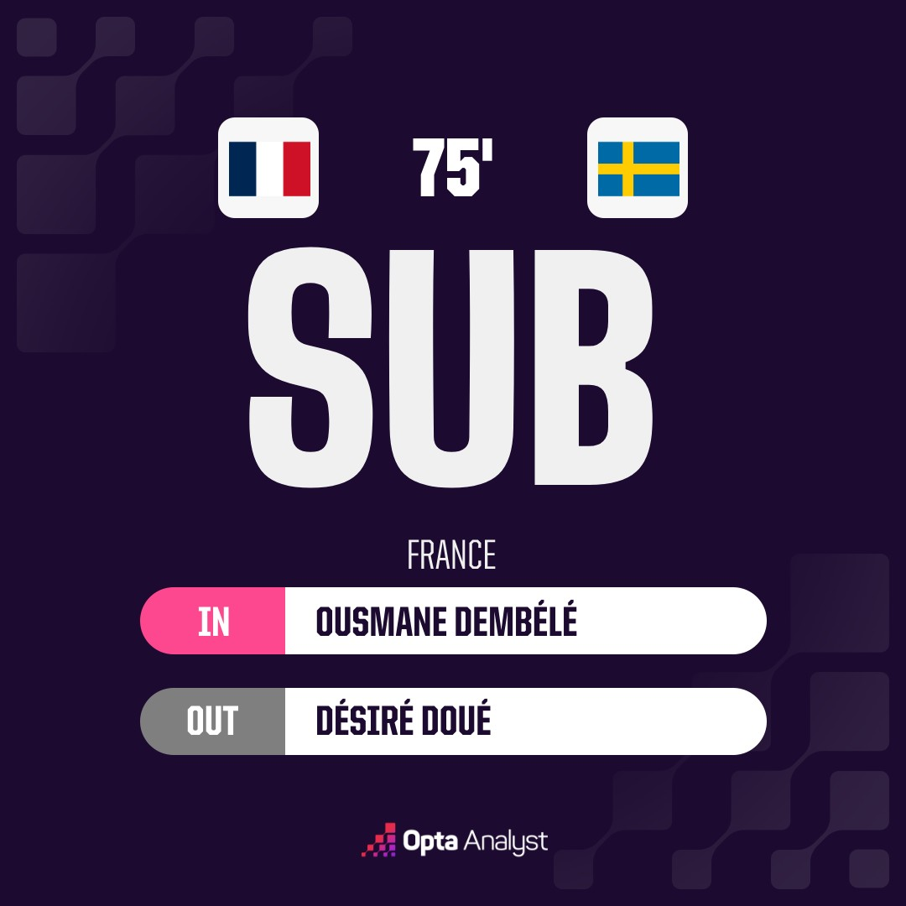
75'
France are making a tactical change. Jules Koundé is leaving the field and in their place comes Malo Gusto – we will soon see if this switch has the desired impact.
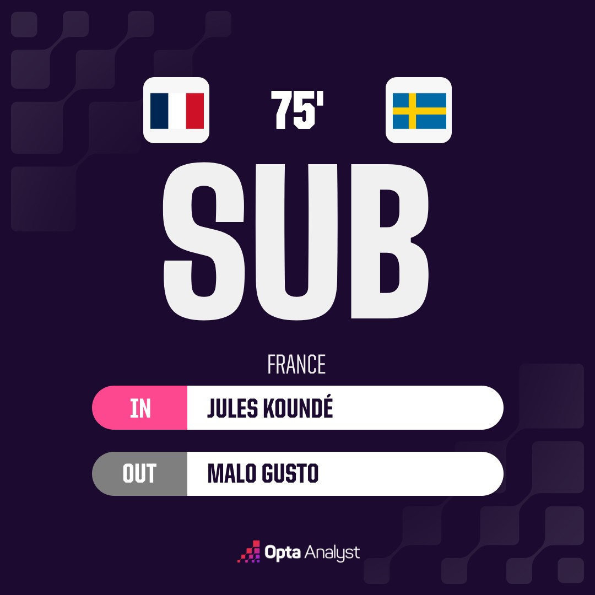
75'
France are making a tactical change. Ousmane Dembélé is leaving the field and in their place comes Désiré Doué – we will soon see if this switch has the desired impact.
74'
Michael Olise has assisted his fifth goal at the 2025 FIFA World Cup, more than any other player.
74'
Kylian Mbappé has attempted 5 shots, the first time he has attempted at least 5 shots in a match in the FIFA World Cup since facing Iraq on 22nd June 2026 (8 shots).
74'
Kylian Mbappé has scored his 18th goal in the FIFA World Cup.
74'
GOAL! France have extended their lead! It's Kylian Mbappé who has got the goal, and Sweden are now three goals behind, with France now in a strong position to record a victory.
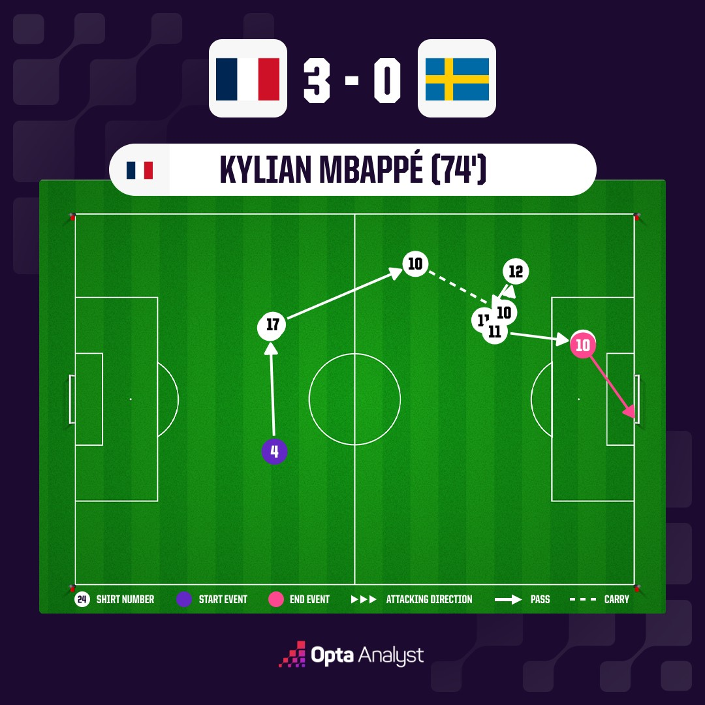
71'
MISS! Michael Olise fluffs their lines, and will France be made to pay for that miss? Sweden could have been down and out if that attempt had gone in, but at least they have not fallen even further behind in this contest.
66'
That might have been going in! A fantastic block from Gustaf Lagerbielke, who gets in the way of a goal-bound effort from Dayot Upamecano. Would the goalkeeper have been beaten? We will never know.
66'
Still behind, but Sweden are refusing to roll over - defensive urgency rising as they fend off more pressure and push for a late turnaround.
66'
A substitution for Sweden sees Lucas Bergvall replaced by Besfort Zeneli. There does not appear to be any obvious sign of an injury, so that is a tactical switch.
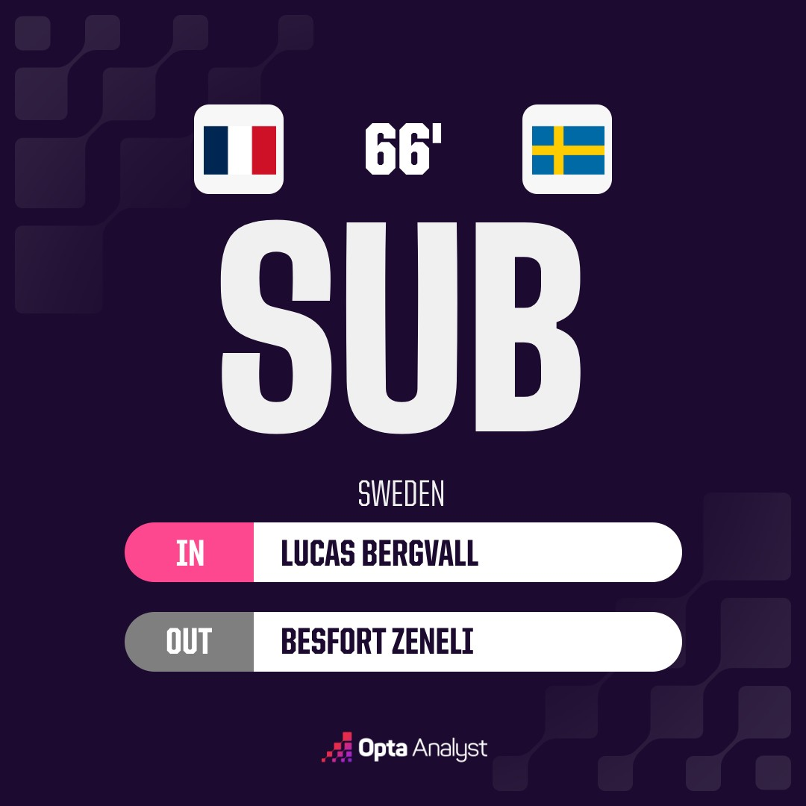
66'
With 25 minutes left to play, it’s a good chance to check in on the shot count. Sweden have mustered 4 so far, with 1 of those landing on target. On the other hand, France have gotten 19 of their 8 of attempts on target.
66'
Sweden are making a tactical change. Elliot Stroud is leaving the field and in their place comes Taha Ali – we will soon see if this switch has the desired impact.
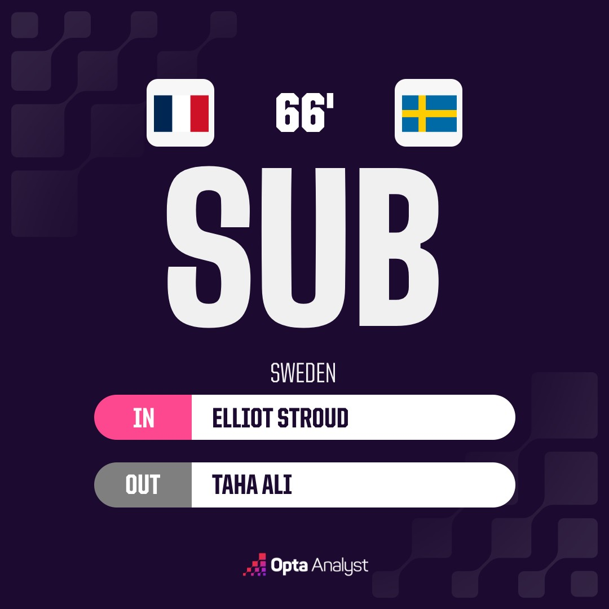
65'
Michael Olise has attempted 5 shots, his highest total in a single match in the FIFA World Cup.
65'
Michael Olise's effort is deflected out for a corner. Can France make anything of this set-piece?
61'
CORNER! The pressure is building for France as they win a set-piece after Michael Olise's attempt is blocked by Jacob Widell Zetterström and diverted out of play.
59'
France are controlling the tempo beautifully in this second period - another sequence of 20+ passes as they make Sweden chase shadows and preserve their advantage.
57'
No luck! Lucas Bergvall takes on a shot that, had they got it right, might have been set to test the goalkeeper, but instead it is sent off target and France come away unscathed.
56'
Set-piece after set-piece - Sweden are turning up the pressure as they search for a breakthrough.
55'
A free-kick to Sweden, as Lucas Digne goes in and fouls Anthony Elanga. However, France will not mind giving one away in this area too much, with plenty of distance to their goal.
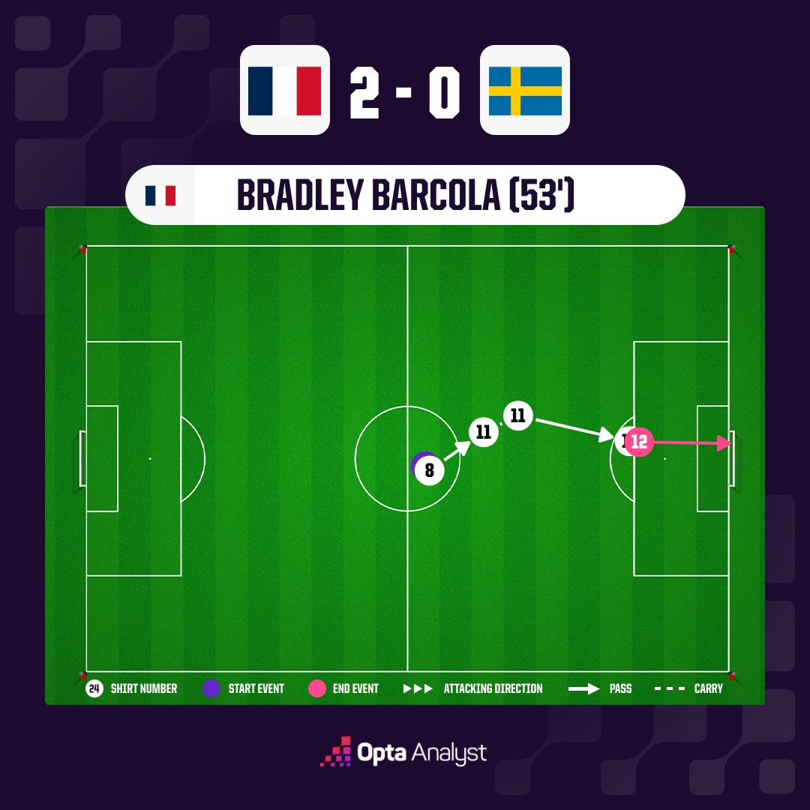
53'
Michael Olise has assisted his fourth goal in the 2026 FIFA World Cup.
53'
Bradley Barcola has scored his second goal in the 2026 FIFA World Cup, netting for the first time since 16th June 2026 against Senegal.
53'
Bradley Barcola! That is another goal for France, who now lead 2-0! Is there any way back into this one for Sweden? Their prospects look bleak, unless they can find a swift response.
52'
The Sweden defence steps up in time and there is a frustration for Ousmane Dembélé, who thought they were through until the flag goes up to signal offside.
50'
A chance goes begging as Aurélien Tchouaméni gets off a shot that does not hit the target. They might have done better with that one, but instead it is a goal-kick to Sweden.
47'
A foul from Alexander Isak on Jules Koundé sees France win a free-kick, but it is not in a dangerous position, so Sweden should be confident they can defend it easily enough.
47'
Excellent defensive work from France; their organization and success in key duels are effectively safeguarding their lead.
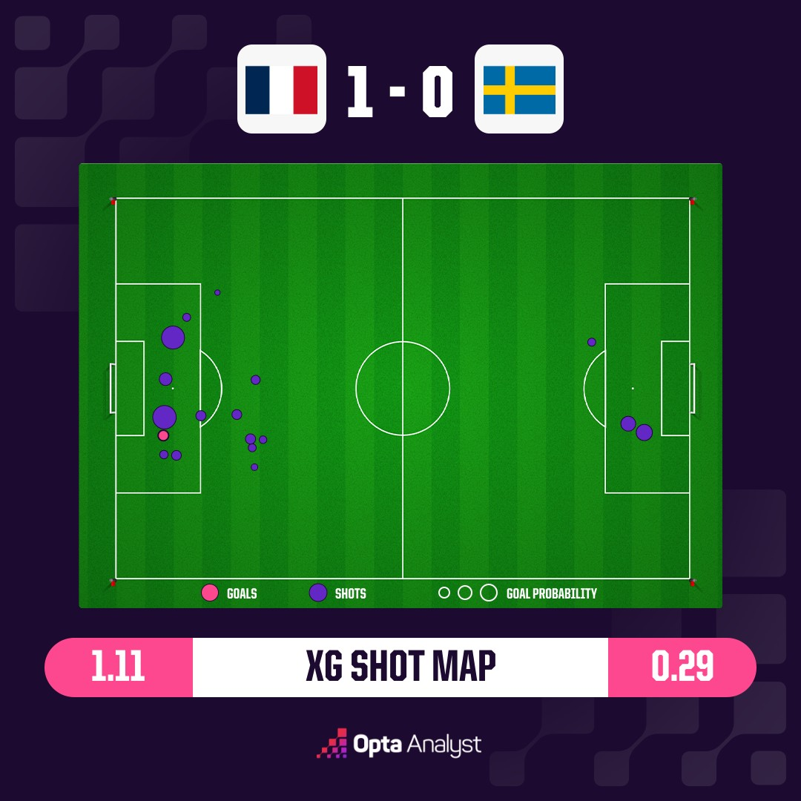
45+4'
Half-time! We reach the interval at New York New Jersey Stadium and it is France who have a 1-0 lead over Sweden. Can they hold on and see this out in the second half?
45+3'
No luck – it’s offside! Daniel Svensson looked to dart in behind and get on the end of a pass, yet they just went too early, and the flag is up to signal offside.
45+2'
MISS! The score remains 0-1, with France relieved after Sweden’s Elliot Stroud goes for goal but sends their attempt off target. Not one to write home about, that one.
45+1'
Ousmane Dembélé has assisted his second goal in the 2026 FIFA World Cup.
45+1'
France have avoided defeat in their last 29 matches when scoring first in the FIFA World Cup, since a 2-3 loss to Poland on 10th July 1982.
45+1'
Kylian Mbappé has scored his 17th goal in the FIFA World Cup.
45+1'
GOAL! France have scored and it is Kylian Mbappé who has put them in the lead! Kylian Mbappé applies the finish and while that is not game over for Sweden, they have plenty of work to do now! We will see if that strike proves to be the winner!
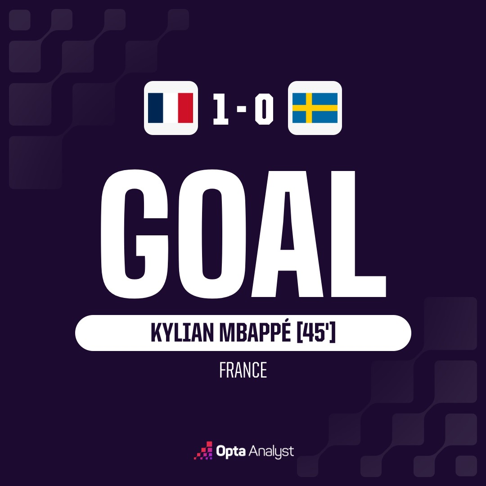
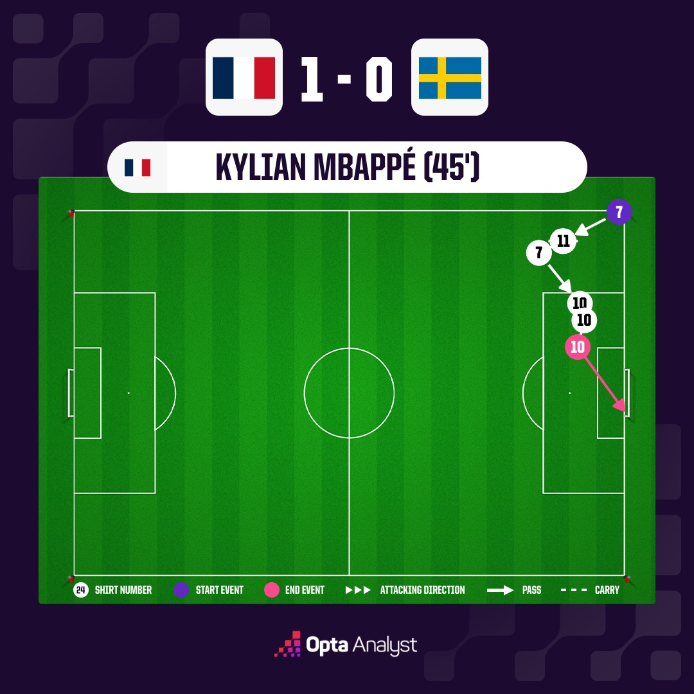
45+1'
Jacob Widell Zetterström has made 5 saves, his highest total in a single match in the FIFA World Cup.
45+1'
Sweden have a corner to defend now after Jacob Widell Zetterström diverts an attempt from Michael Olise out of play. Can France take this chance to get a good delivery in and really test their opponent’s defence?
44'
Shot blocked! Jules Koundé unleashes an attempt at goal, but the ball does not reach its target thanks to Gustaf Lagerbielke, who makes a solid block to stem the danger – for now.
42'
MISS! The score remains 0-0, with Sweden relieved after France’s Michael Olise goes for goal but sends their attempt off target. Not one to write home about, that one.
41'
A foul from Adrien Rabiot on Lucas Bergvall sees Sweden win a free-kick, but it is not in a dangerous position, so France should be confident they can defend it easily enough.
40'
That was hopeful! A bit of a punt from Kylian Mbappé, who goes for goal from distance, but Jacob Widell Zetterström makes the save.
39'
Dayot Upamecano goes in on Elliot Stroud and concedes a foul. The free-kick is not in a particularly dangerous area from France’s viewpoint, though.
39'
A chance goes begging as Dayot Upamecano gets off a shot that does not hit the target. They might have done better with that one, but instead it is a goal-kick to Sweden.
38'
A free-kick in a dangerous position now for France, after a foul from Lucas Bergvall on Kylian Mbappé. Can France make Sweden pay for that rashness from Lucas Bergvall?
36'
What a miss! That was a huge chance for Ousmane Dembélé, but they have failed to convert. What an opportunity that was for France.
35'
A rash challenge from Aurélien Tchouaméni, who sends Viktor Gyökeres tumbling, giving Sweden a free-kick. It is not in a threatening position, but it gives them a chance to get back on the ball.
33'
MISS! A shot from Adrien Rabiot ends up being off target. They might have done a bit better with that one, but it remains France 0-0 Sweden.
32'
MISS! How has that not gone in? A complete lack of composure shown from Kylian Mbappé, who squanders a golden chance for France, whose coach looks on frustrated from the touchline. A real let off for Sweden!
31'
Corner! France are pushing for a goal and now they have an opportunity from this set-piece.
31'
In the last 15 minutes, it is France who have dominated the ball, having seen 77.88% of the possession, yet they have not been able to go and turn that into a goal just yet, with their opponents standing firm.
30'
Can Sweden survive here? They will have some defending to do after the ball is turned behind for a corner kick. Will France take this opportunity and grab the goal they have been pushing for?
30'
Save! A big stop from Jacob Widell Zetterström, who reacts to keep out Adrien Rabiot's attempt from inside the area.
28'
France win a corner after Ousmane Dembélé sees a shot diverted wide by Elliot Stroud. Can France make this opportunity count, or will Sweden defend this?
28'
MISS! A shot from Alexander Isak ends up being off target. They might have done a bit better with that one, but it remains Sweden 0-0 France.
27'
Adrien Rabiot goes in on Yasin Ayari and concedes a foul. The free-kick is not in a particularly dangerous area from France’s viewpoint, though.
22'
A foul from Michael Olise on Yasin Ayari sees Sweden win a free-kick, but it is not in a dangerous position, so France should be confident they can defend it easily enough.
20'
Offside! Kylian Mbappé thought they were through on goal, but the Sweden defence stepped up in time to catch them offside, and the assistant referee puts their flag up.
19'
No luck! Bradley Barcola takes on a shot that, had they got it right, might have been set to test the goalkeeper, but instead it is sent off target and Sweden come away unscathed.
18'
A foul from William Saliba on Viktor Gyökeres sees Sweden win a free-kick, but it is not in a dangerous position, so France should be confident they can defend it easily enough.
17'
SAVE! A shot from outside the box by France Kylian Mbappé was heading in, but Sweden Jacob Widell Zetterström keeps it out with a smart stop.
16'
There is plenty of possession for France, with 68.86% compared to Sweden 31.14% in the last 15 minutes. However, France have not been able to turn that dominance of the ball into a goal.
15'
That was hopeful! A bit of a punt from Lucas Digne, who goes for goal from distance, but Jacob Widell Zetterström makes the save.
15'
Corner! The ball goes behind and now France will aim to deliver a good ball into the penalty area and test that Sweden defence, which has been frustrating them in recent minutes.
14'
This could be a chance for France, after Lucas Bergvall fouls Adrien Rabiot, handing them a free-kick in a threatening area. A good set-piece from here could really test the Sweden defense!
13'
No goalmouth action for some time now, with neither team having had a shot in the past 10 minutes. Will there be a moment that changes things soon? France have seen plenty of the ball, however, with 70 per cent of the possession in their favour during that period.
8'
It’s been tight so far, and Sweden are making sure it stays that way with strong defensive discipline and well-timed clearances.
7'
A foul from Yasin Ayari on Michael Olise sees France win a free-kick, but it is not in a dangerous position, so Sweden should be confident they can defend it easily enough.
6'
Free-kick! A foul from Adrien Rabiot on Viktor Gyökeres. It is well away from France’s goal, so it is unlikely to result in a chance for Sweden.
4'
Free-kick! A foul from Yasin Ayari on Ousmane Dembélé. It is well away from Sweden’s goal, so it is unlikely to result in a chance for France.
3'
A rash challenge from Alexander Isak, who sends Aurélien Tchouaméni tumbling, giving France a free-kick. It is not in a threatening position, but it gives them a chance to get back on the ball.
3'
Save! A big stop from Mike Maignan, who reacts to keep out Alexander Isak's attempt from inside the area.
2'
Free-kick! A foul from William Saliba on Viktor Gyökeres. It is well away from France’s goal, so it is unlikely to result in a chance for Sweden.
1'
A free-kick to France, as Lucas Bergvall goes in and fouls Lucas Digne. However, Sweden will not mind giving one away in this area too much, with plenty of distance to their goal.
1'
And we are off! Strap in, folks, for this mouthwatering encounter between Sweden and France at New York New Jersey Stadium.
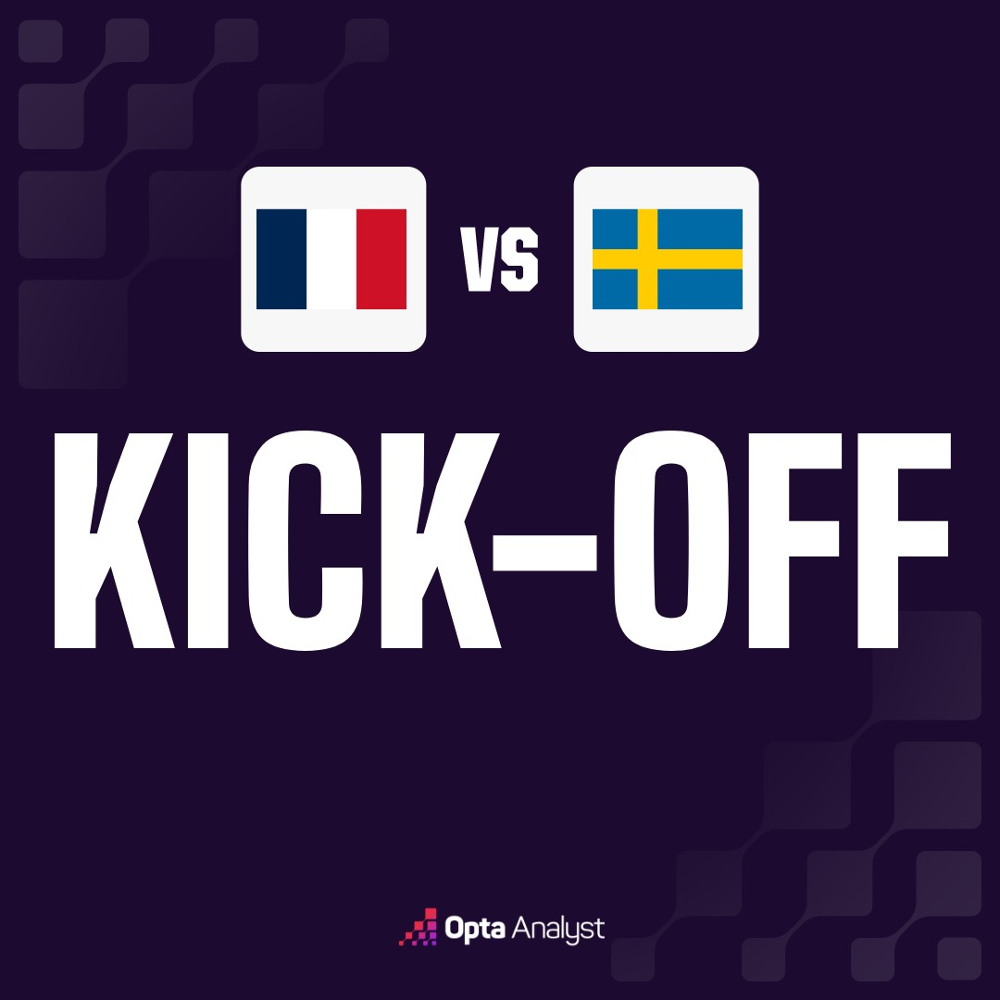
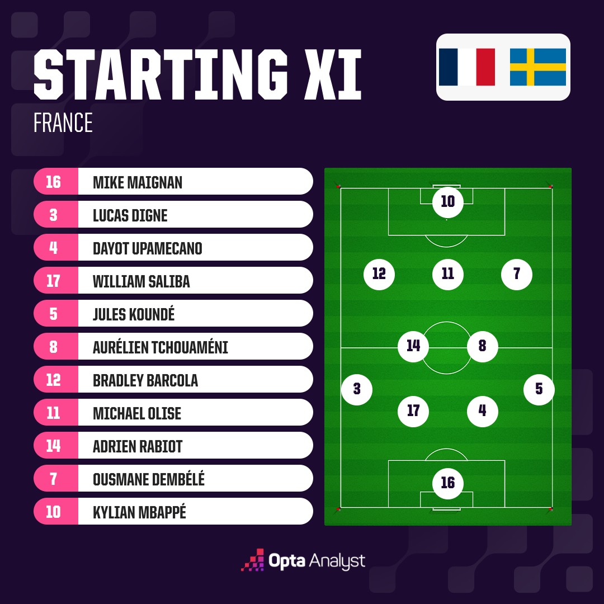
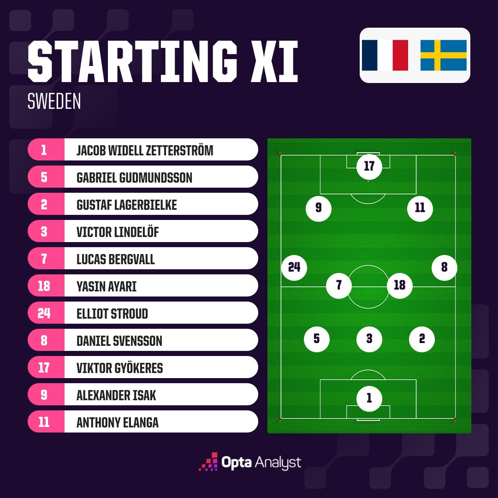
Ousmane Dembélé is making his 15th appearance in the FIFA World Cup.
Kylian Mbappé is making his 18th appearance in the FIFA World Cup.
France have won their last 6 home matches in a row
O. Dembélé has scored in the last 2 games for France
There have been at least three goals in the last 5 games between France and Sweden at France's home
France have won their last 2 games when O. Dembélé has scored
Continuing a strong run of FIFA World Cup form will be the aim for France when they face Sweden on Tuesday at New York New Jersey Stadium in the Round of 32.
France's last group stage match saw them triumph 4-1 over Norway on June 26. Ousmane Dembélé led the team with a hat-trick. They have four consecutive wins in all competitions. In seven games this year, they have six wins and one loss.
Sweden played out a 1-1 draw against Japan in their last game, a June 25 group stage clash at Dallas Stadium. Anthony Elanga was the lone player to net in the draw. In 2026, they have won three, drawn two, and lost two.
France finished first in their group on nine points, while Sweden's four points placed them third.
The previous fixture between the teams saw France win 4-2 in an UEFA Nations League League A match at Stade de France in November 2020. Olivier Giroud led the French side with two goals, netting in the 16th and 59th minute. Benjamin Pavard and Kingsley Coman also were on the scoresheet. Viktor Claesson and Robin Quaison were on the scoresheet for the Swedish side.
Dembélé and Kylian Mbappé have caught the eye for France in World Cup play. The pair are the team's joint top scorers with four goals, tied for the second highest in the competition's scoring charts. Mbappé has scored the crucial first goal of the match two times, while Dembélé has one such strike. Sweden's leading players in the final third have been Yasin Ayari and Elanga, who have each scored twice in this World Cup campaign.
Both sides have been difficult to stop in attack in World Cup play, as each have found the net in every match in the competition this season.
In their last six matches in all competitions, France have won five and lost one. The French side scored 17 and conceded six in that stretch, scoring first in all six contests. They had eight first-half goals, while their opponents netted once in the first 45 minutes. The Swedish side have won two, drawn two and lost two in their last six. The Swedish side scored 13 and conceded 14 in that stretch, netting first in two of the six. They had four goals in the first half, while their opponents netted eight times before the break.
-
General
Possession 61.0% 61.0438.9639.0% Possession lost in defensive half 28 282626 Possession lost in middle third 35 354444 Duels 86 868686 Duels success rate 53.5% 53.48846.51246.5% Aerial duels 20 202020 Aerial duels won 65.0% 653535.0% Successful dribbles 11 1177 Fouls won 10 101414 Offsides 3 311 Corner awarded 9 911 -
Distribution
Passes 551 551350350 Long passes 36 364545 Long passes proportion (%) 6.5% 6.53412.85712.9% Passing accuracy 87.8% 87.8479.42979.4% Passes in opponents' half 370 370176176 Passing accuracy in opponents' half (%) 87.3% 87.29767.04567.0% Total passes in the final third 207 207105105 Passing accuracy in final third (%) 87.0% 86.95760.95261.0% Forward passes 359 359224224 Forward passes (%) 65.2% 65.1546464.0% Through balls 7 722 Final third entries 62 624949 Penalty area entries 33 332525 Total open play crosses 9 988 Crosses 17 171111 Crossing accuracy 23.5% 23.52927.27327.3% -
Attack
Goals 3 300 Shots 25 2588 Shots on target 12 1233 Blocked shots 4 411 Headed shots 1 122 Shots outside the box 9 911 Shots inside the box 16 1677 Shots accuracy excluding blocked shots 57.1% 57.14342.85742.9% Shooting accuracy 48.0% 4837.537.5% Key Passes 20 2055 -
Defence
Tackles 13 131313 Tackles success rate 53.8% 53.84669.23169.2% Clearances 23 232626 Interceptions 5 51212 Recoveries 46 463535 Attacking third recovery 1 144 Defensive third recovery 29 292020 Midfield third recovery 16 161111 Recoveries in attacking half (%) 2.2% 2.17411.42911.4% -
Discipline
Fouls conceded 14 141010 Yellow cards 0 000 Red cards 0 000